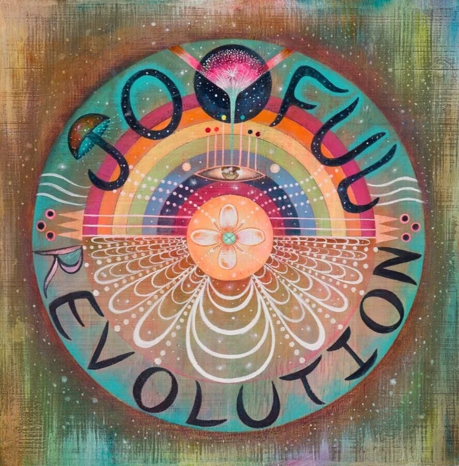
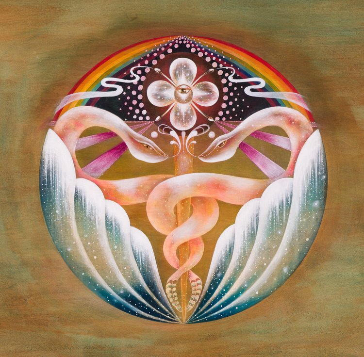
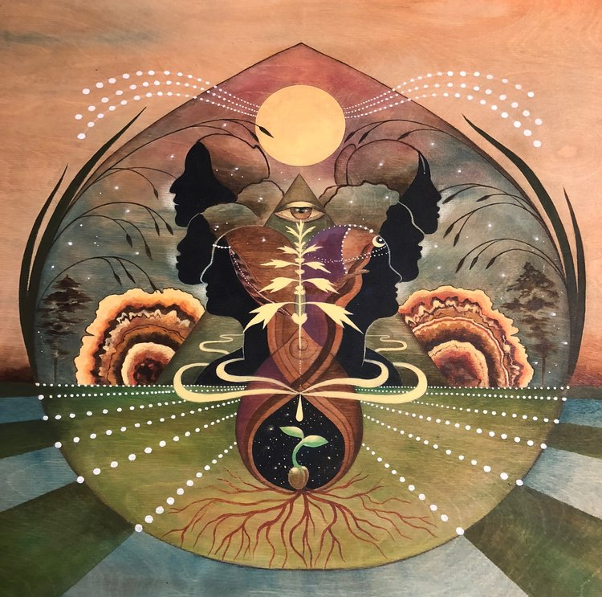
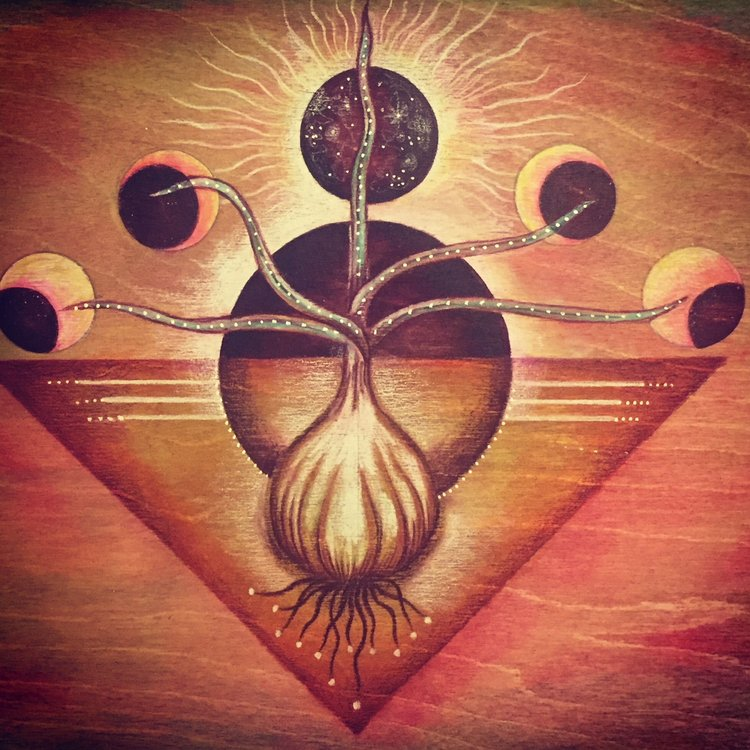
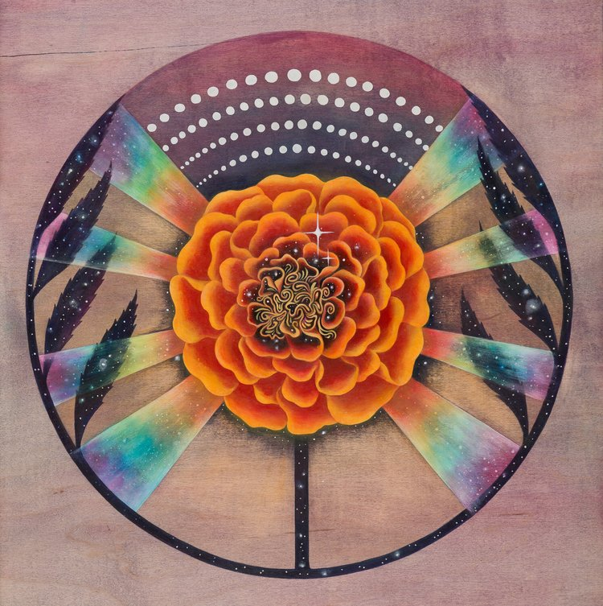
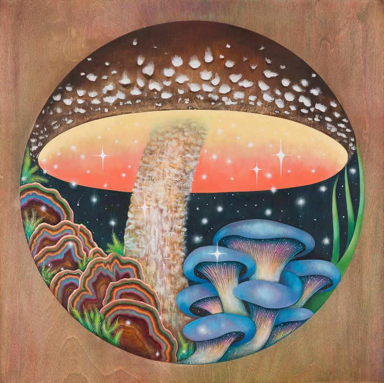
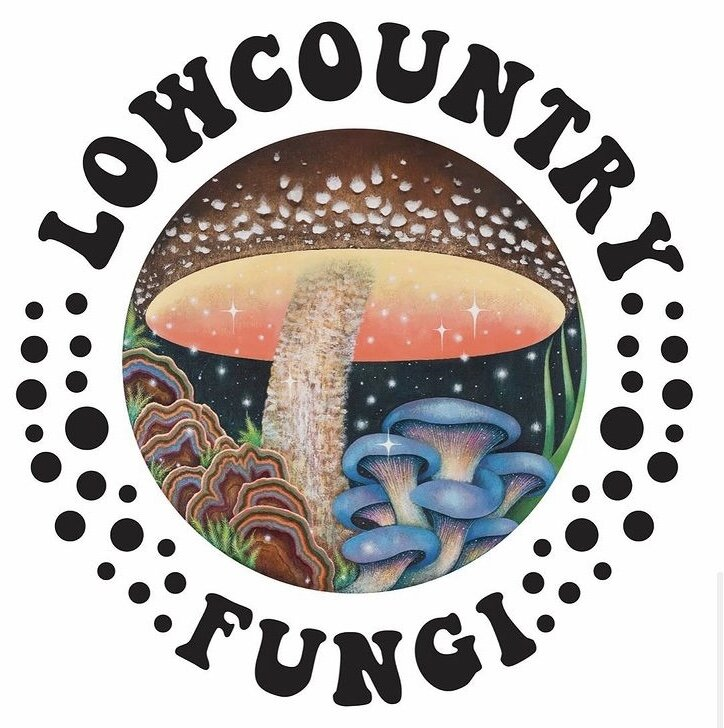
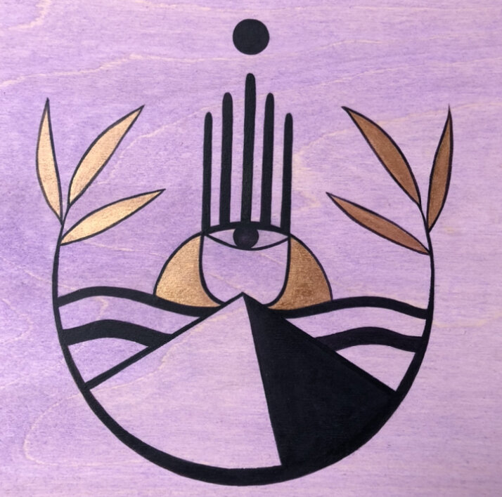
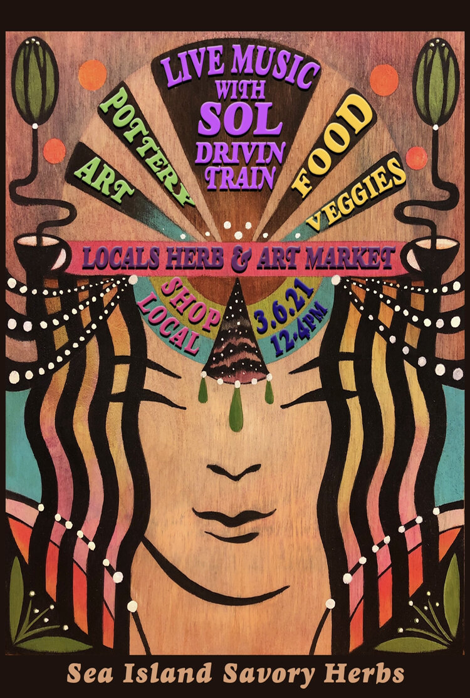

Logos & Illustration
Botanical logos, posters, and custom illustration rooted in plant medicine and sacred geometry. From apothecary branding to festival posters, every piece carries the same intention as the paintings — honoring the plants and the people who work with them.

Joyful Evolution
Poster

Rattlesnakes & Rainbows
Self Branding

Wecology
Logo Design

Fire Cider
Product Illustration

Marigold
Botanical Illustration

Low Country Fungi
Illustration

Low Country Fungi
Logo Design

Chariot Apothecary
Branding
Sacred Geometry
Illustration

Sea Island Herb Market
Event Poster
Have a Project in Mind?
Whether it's a logo for your herbal business, a poster for your next event, or custom botanical illustration, I'd love to hear about it. Every project starts with a conversation about your vision and the plants that speak to your work.
Start a Conversation